Le Parc de Versailles est ouvert !
Conformément aux consignes gouvernementales le chateau de Versailles, les jardins et le domaine de Trianon sont fermés.
Toute fois, le parc de Versailles est ouvert à la promenade aux piètons et cyclistes.
L'accès se fait par la grille de la Reine, la porte Saint-Antoine ou grille des Matelots de 8h à 17h30.
Découvrez les concessionnaires ouverts pendant les vacances scolaires de février, uniquement en vente à emporter.
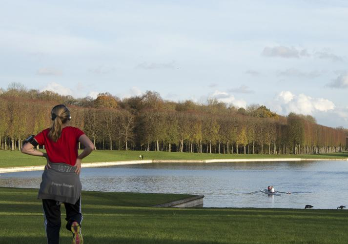
.png)
Campagne d'urgence !
Aidez le chateau de Versailles
7 mars 2021
6°C - 14°C
-
LE CHATEAU
Du chateau de plaisance
au musée nationalFermé
-
LE PARC
Un écrin de verdure
Ouvert de 8h00 à 18h00
Affluence: faible
-
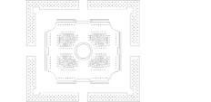
LES JARDINS
L'art de la perspective
Fermé
-
LE DOMAINE DE TRIANON
Un lieu d'intimité
Fermé
Actualités
-
VIE DU DOMAINE
Photos souvenir de Versailles
Découvrez et participez l'histoire intime de Versailles à travers les "photos souvenir" d'une collection en ligne, de 1900 à nos jours.
-
VIE DU DOMAINE
La mode à Versailles
Le partenariat entre le chateau de Versailles et le Google Cultural Institute se poursuit à l'occasion du projet international "We Wear Culture" avec ...
-
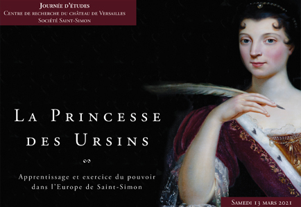
VIE DU DOMAINE
La princesse des Ursins :
Journée d'études en ligne dédiée à "La Princesse des Ursins : apprentissage et exercice du pouvoir dans l'Europe de Saint-Simon" organisée par le Centre ...
Découvrir toute nos actualités
Evènement
-
EXPOSITIONS
DU 28 FEVRIER AU 31 MAI 2021
Virtually Versailles
L'itinérance de l'expostion digitale "Virtually Versailles" se poursuit à Shanghai. Présentée du 28 février au 31
-
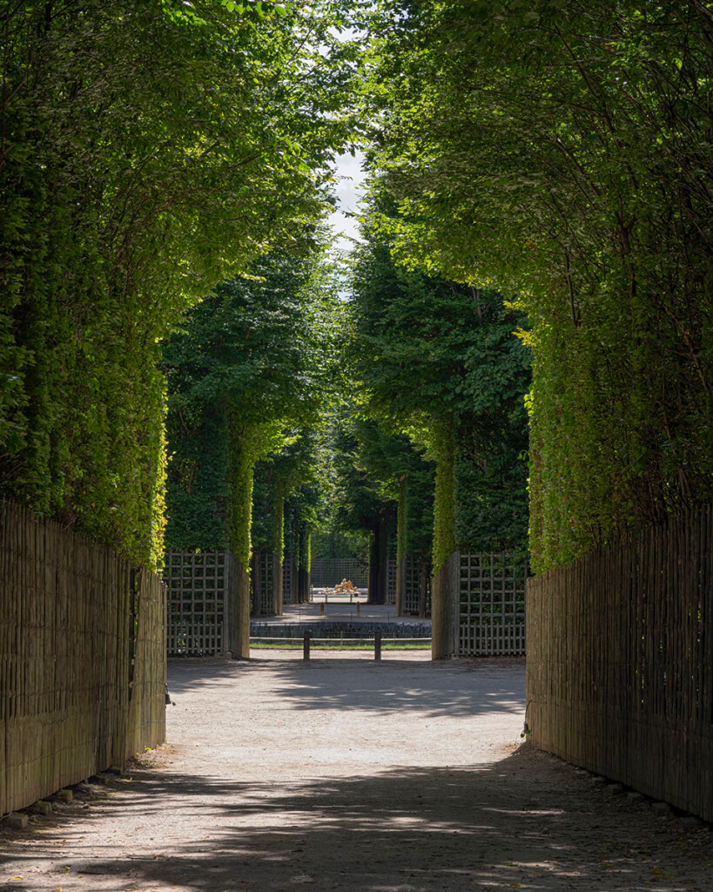
LES CARNETS DE VERSAILLES MAGAZINE
LES CARNETS DE VERSAILLES MAGAZINE
Perspective Printanières
Grande allées d'arbres se prolongeant à l'infini, mais aussi talus, gradins, bordures et palissades forment des lignes
-
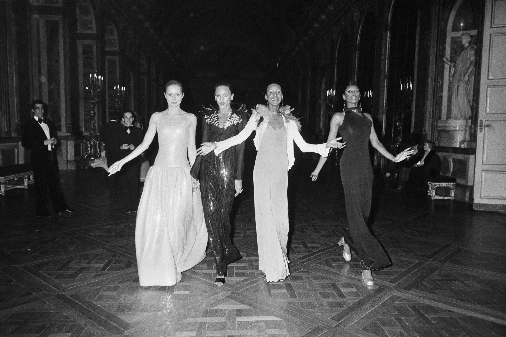
VIE DU DOMAINE
LE 28 NOVEMBRE 1973
La princesse des Ursins :
En 1973, une soirée exceptionnel est organisée par la baronne de Rothschild et le conservateur en chef, Gérald Van der
Découvrir toute nos actualités
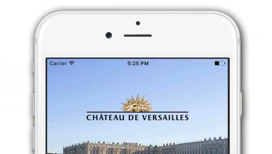
L'application mobile du chateau
L'application propose gratuitement l'audioguide de l'ensemble du domaine( Chateau, jardins, domaine de Trianon...) ainsi qu'une carte interactive.
22 000 oeuvres d'art à consulter en ligne
Riches d'environ 60 000 oeuvres, les collections du chateau de Versailles illustrent plus de cinq siècles d'Histoire de France.
Cet ensemble reflète la double
vocation du Chateau : palais autrefois habité par les souverains et musée dédié "à toutes les gloires de France" inauguré par Louis-Philippe en 1837.
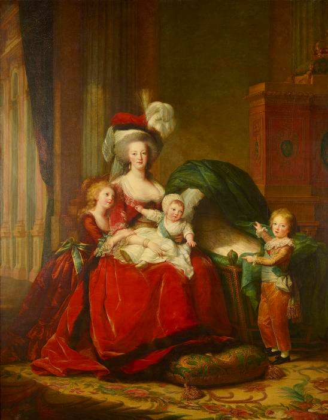
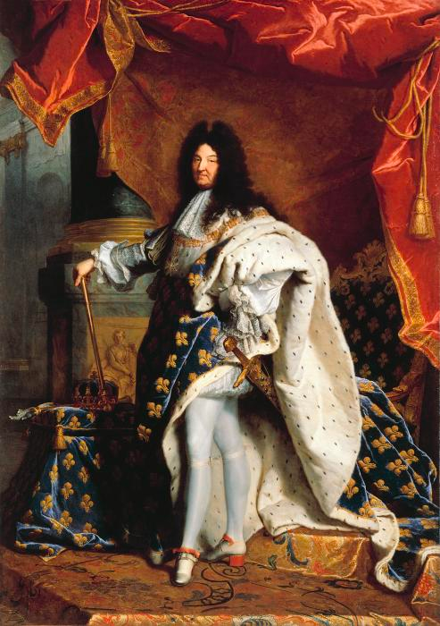
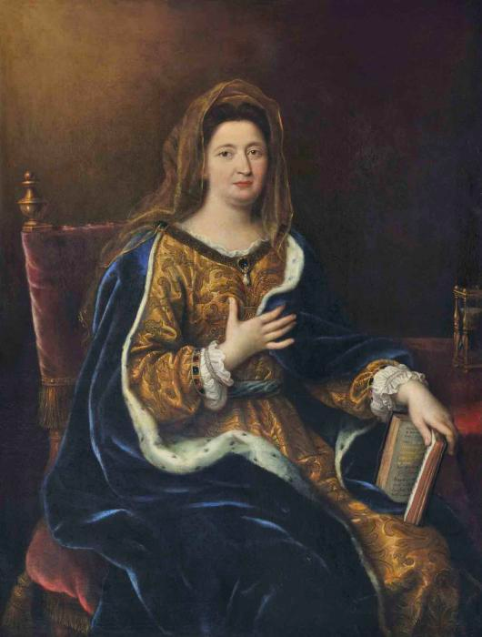
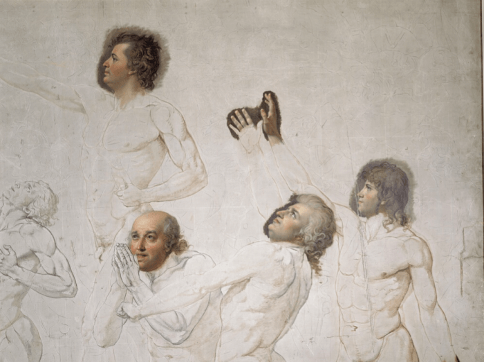
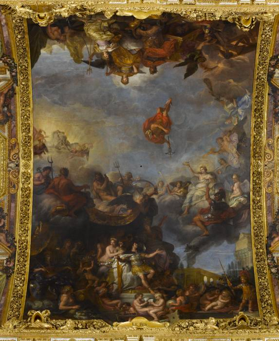
Découvrir le site des collections
Informations pratiques
Chateau
de 9h à 17h30
fermé le lundi
Domaine de Trianon
de 12h à 17h30
fermé le lundi
Jardins
de 8h à 18h
Galerie des Carosses
de 12h à 17h30
fermé le lundi
Place d'Armes
78 000 Versailles
France
Informations pratiques
01 30 83 78 00
(prix d'un appel local)
Nous contacter
Préparer ma visite